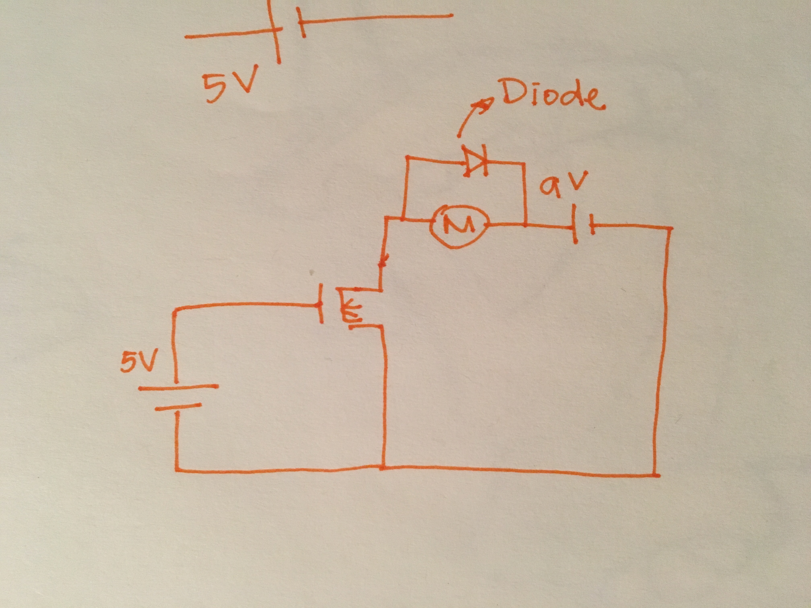
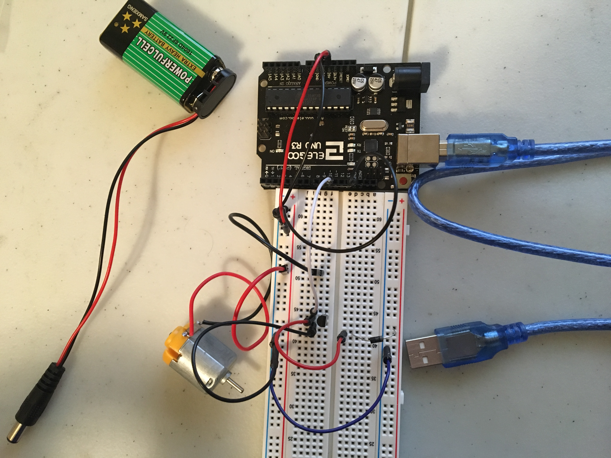

Assignment 4: Voltage & Transistor
Here is all the documentation for Assignment 4!
The Schematic
 This drawing is the schematic of a potentiometer and two LED lights. Resisters are picked from assignment 1 and suggested in class, and with calculation shown in the picture.The Circuit
 This is the final set up for the circuit looping from pin9, 5V to GND and an extra battery... without the working outlet due to missing parts connecting the battery to the breadboard.The Code
/*
This assignment had to be modified due to the snow weather condition and me forgetting a few
things back in Seattle.
It is meant to be connected to the battery and the power source to turn on the motor, but it
was not completed due to missing voltage measurement and connector to the battry
*/
const int motorPin = 9; //this is the pin that connects to the motor
void setup() {
pinMode(motorPin, OUTPUT); //initialize the motor as the output
}
void loop() {
digitalWrite(motorPin, HIGH); //sets the motor running in the beginning
delay(50); //pause for 50ms
digitalWrite(motorPin, LOW); //then stop running the motor
}
The Operation of the Circuit
Below is a short demo of the circuit in operation. Will be uploaded shortly after I have access to power source.